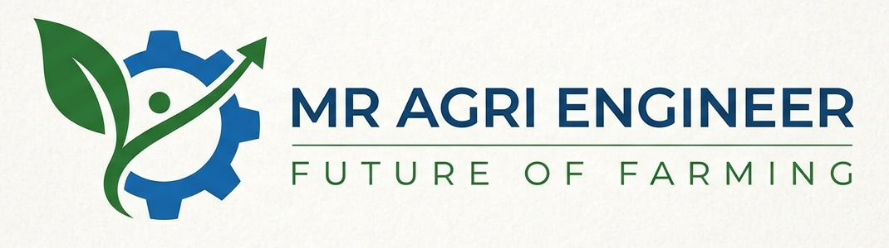

Understand the land
Land conditions, soil, water, access, goals, and budget help shape the plan.

Mr:Agri Engineer · Farm planning & project coordination
Make your land work towards that future. Get practical guidance to understand your site, shape a farm plan, estimate the work, and move forward one clear step at a time.

Your land, your goals,
a plan you can act on.
Starting a farm or improving land takes informed decisions. We help landowners explore their goals, understand site conditions, and organise the next steps into a workable project plan.
Tell us about your land →Land conditions, soil, water, access, goals, and budget help shape the plan.
Understand the scope, expected costs, vendors, and practical sequence before work begins.
Keep planning, vendor coordination, implementation, and project oversight moving together.
Begin wherever you are. We bring the necessary people and decisions together.
Land-use planning for commercial farms, weekend farms, mixed farming, and farmhouses.
A paid, detailed assessment of land conditions, water, access, drainage, and suitability.
A practical report covering recommended activities, layout, materials, risks, and cost planning.
Vendor comparison, procurement coordination, implementation, and project monitoring.

Crop zones, irrigation, roads, storage, farm structures, and future phases considered together.

Materials, services, and implementation stages organised into an understandable estimate.

Appropriate suppliers and contractors mapped to the scope, sequence, and approved project plan.

A sound project starts by understanding what your land can support — and what you want it to become.
You do not need farming expertise to start. You need a clear process and the right coordination.
We understand your land, objective, budget, timeline, and whether you are planning a farm, farmhouse, or both.
When required, site and soil analysis examines feasibility, water, access, drainage, and growing suitability.
We develop the project model, layout, vendor requirements, phased costs, and a detailed proposal for approval.
Once approved, we coordinate vendors, implementation, monitoring, and a structured handover.
If you don't see your question here, an initial discussion is the best place to start.
No. We work with people who are interested in farming but need help turning land, ideas, and investment capacity into a practical path forward.
Detailed site and soil study can be scoped as a separate paid service. Its findings are used to make the proposed plan more grounded and useful.
A project report can cover land analysis, recommended farming model, layout, materials, vendor requirements, estimated costs, operating needs, and relevant risks.
Yes. A project can be developed in phases, so priorities are clear and the scope can be adjusted before approval.
Farming is the future
Tell us where your land is, what you hope to do, and what support you need. We’ll get back to you about the next step.
Prefer email? mragriengineer@gmail.com